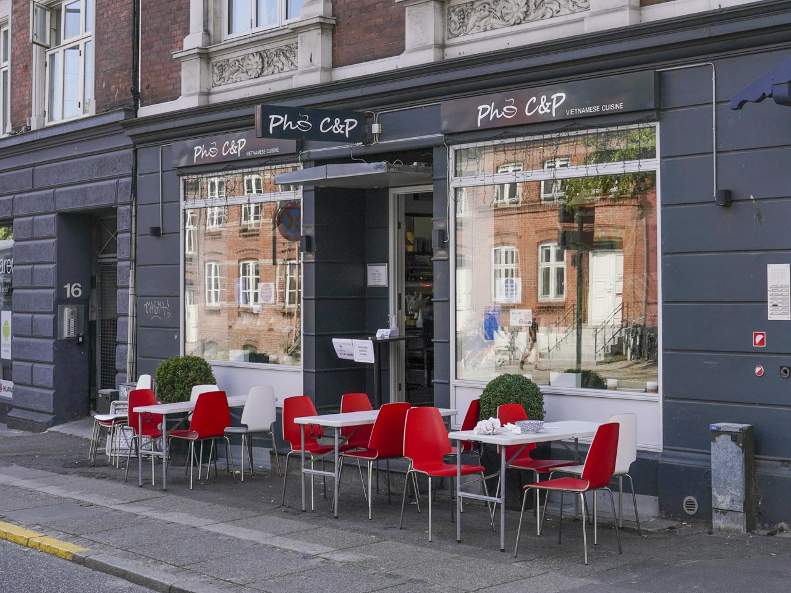
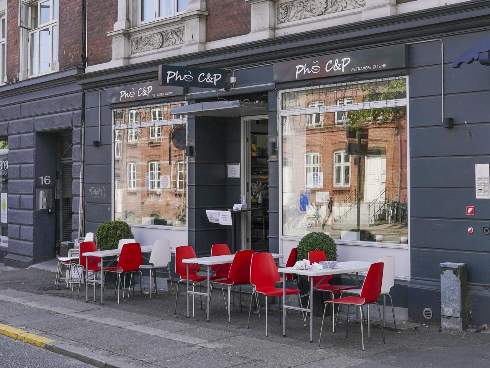

BILLIGE RESTAURANTER I AARHUS TIL DEN STUDERENDE
Har du også svært ved at finde gode restauranter til overkommelige priser i Aarhus? Det kan vi hjælpe dig med!
Her giver dig 3 forskellige restauranter med forskellige temaer, så der er lidt til en hver smag til SU venlige priser.
1. Pho C&P
• Prisklasse: 39 kr. - 99kr.
• Køkkener: Vietnamesisk, Sund, Supper
• Særlige kostkrav: Vegetarvenlig, veganske retter, glutenfri retter
de gjort da de fastholder inspirationen i deres rødder. I Vietnam er det utroligt populært med madboder, da folket gerne vil have mad med på vejen. De er inspireret af det vietnamesiske køkken, som især specialiserer sig i supper, forårsruller og dumplings. Navnet ”Pho” stammer fra en traditionel vietnamesisk risnudel suppe. Suppen serveres med enten kylling eller oksekød men restauranten tilbyder også en bred variation af andre retter. Dette kan klart anbefales til den studerende, som mangler noget lækkert og nemt som finder glæde i det østlige køkken.
2. BURGER SHACK
• Prisklasse 50 kr - 120kr.
• Køkkener: Amerikansk, Fastfood, Burger
• Særlige kostkrav: Vegetarvenlig, veganske retter, glutenfri retter.
BURGER SHACK er en hyggelig kæde som er rundt omkring i Danmark. BURGER SHACK er blevet opkøbt af dining6 som ejer en masse restauranter-kæder rundt omkring i Danmark. De har købt BURGER SHACK, for at have noget i den lidt billigere prisklasse og HER kommer den studerende ind. BURGER SHACK har flammegrillede bøffer, friteret kyllingefiletter, sprøde pomfritter og hjemmelavede dips. Hvis du er til det lidt mere fedtede amerikansk inspirerede køkken, så er dette en god mulighed, her vil der dog anbefales take-away, da deres siddepladser er begrænsede. Dette kan især anbefales hvis du skal en tur i byen, da de holder natteåbent til kl. 05:00.
3. Vesterlauget
• Prisklasse: 50 kr. - 120 kr.
• Køkkener: Europæisk, Skandinavisk, Dansk
Vesterlauget er Aarhus helt egen madbodega her forbinder de det danske køkken med blandt andet god øl i hanerne eller billig kaffe. Her varierer retterne fra dag til dag, men de fokuserer især på smørrebrød og de er altid gode til at fange det charmerende ved de danske køkkener. Det gode ved Vesterlauget er at deres koncept er simpelt, billigt og hvis du trænger til en god specialøl ved siden af, så er det uden tvivl tilgængeligt.